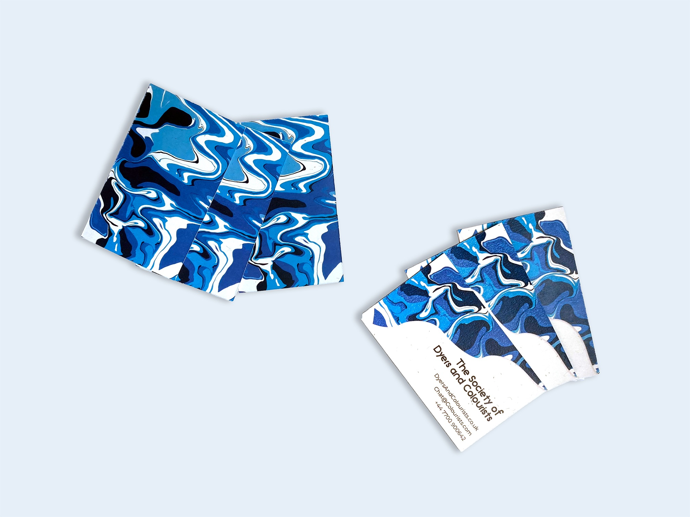
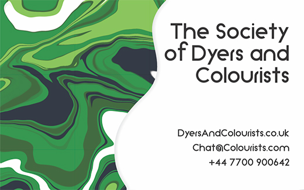
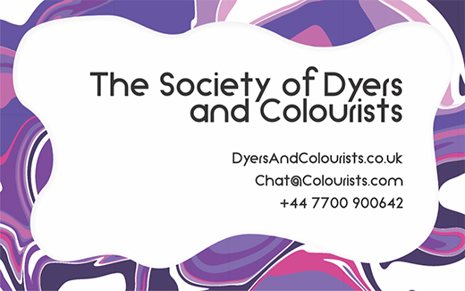

The project used a technique called hydrodipping as the insight for the patterns and colours of the design. This technique was able to create new patterns and designs for every instance and used a colourful process to reflect the society's focus on colour.
This project also experimented with thermochromic ink, which is a type of ink that reacts to heat. In this case, the hotter the ink got the less visible the ink became, which meant it reacted to the warmth from someones hand. This allowed for brilliant copywriting and design ideas..
With a society that is focused solely focused oln colours, it wouldn't be right not to consider how these techniques might look in different colours.
 